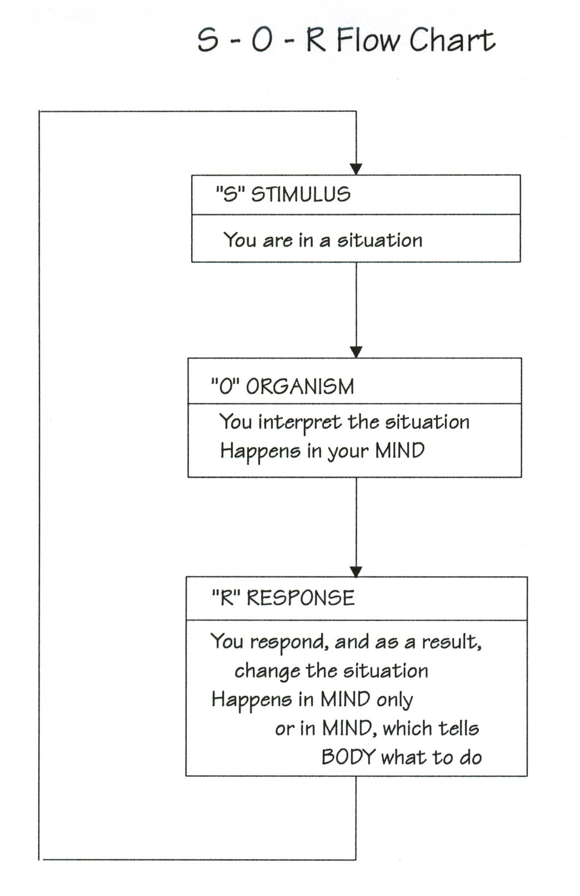
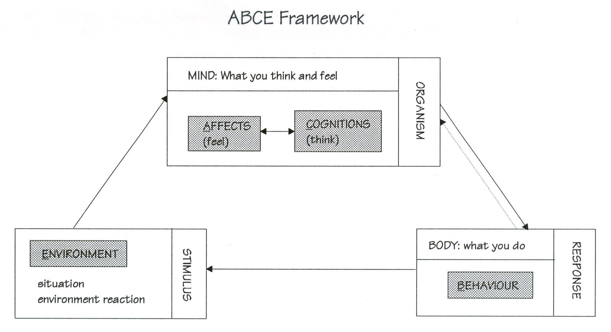
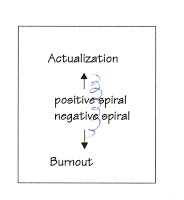
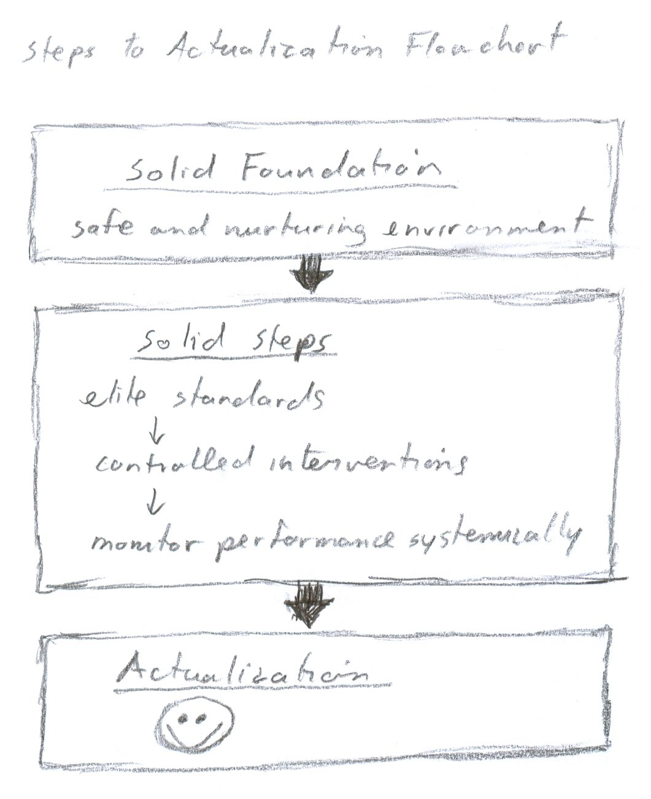
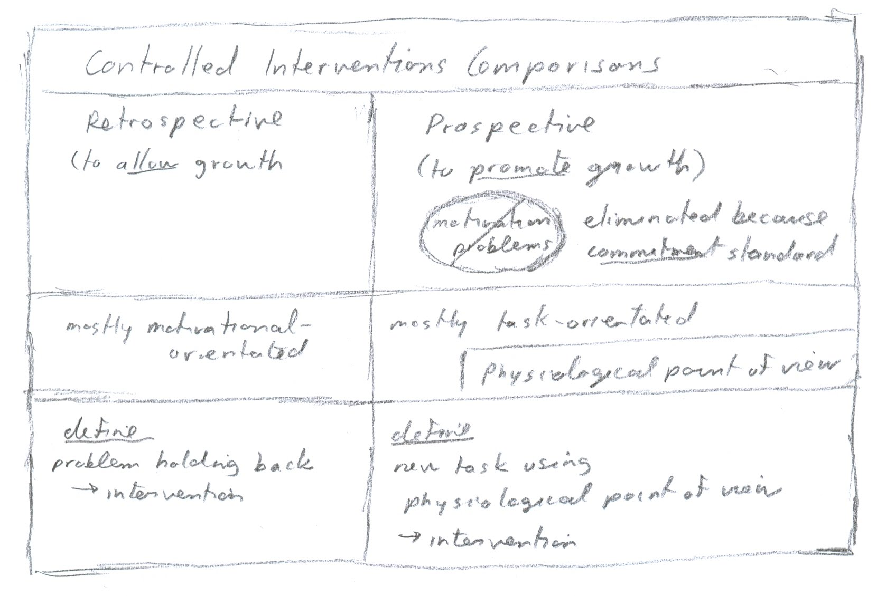

|
ch1 Self-Directed Coaching Manual
ch 1) THE BIG PICTURE
BIG PICTURE Recursive Cycles of Behavior Welcome to the first chapter in Self Directed Coaching Manual. This manual presents problem-solving methods for consideration by elite athletes. Theses methods are the founding principles and algorithms researched in the science of psychology. One founding principle of human behavior is that it is influenced by many factors and is procedurally recursive. Specifically, human behavior follows a sequence. We find ourselves in a situation, we interpret the situation, and then we respond to the situation, causing the initial situation to change. The new situation is the cue for the cycle to repeat itself. The resulting loop repeats forever. In psychological academic literature, this recursive cycle is called “S-O-R”. “S” means stimulus. “O” means an organism, which in this case is the athlete, and “R” means response. The response takes place in the mind and body. Both the mind and body are controlled by the mind. Diagram “SOR flowchart”, figure 1-1, visualizes this principle. Figure 1-1. SOR flowchart 
Another way to describe this recursive loop is by using an ABCE framework, as shown in figure 1-2a, 1-2b. Here again, changes in development take the form of a spiral. The spiral may be neutral, or positive towards actualization, or negative towards burnout. Actualization is when a person has reached their full potential, while burnout is when a person has lost interest in the activity they are working on. Notice that the loop has a strong flow in one direction. When a change is made in the loop, it will affect all the rest of the elements in the loop as well. Changes can be made to any node (A, B, C or E) in the loop. Athletes can improve by changing what goes on in their mind. This is called cognition. Visualization and thinking positive thoughts are examples of mind processes. Athletes can change what they feel. This is called affect. Controlling anxiety is an example of emotional intervention which controls 'affect'. Athletes can also improve performance by changing what their body does. This is called behavior in the ABCE framework. For example. athletes may do a skill in a more efficient way. Changes can also be made in athlete’s environment. It may be that equipment changes are required for better performance. As athletes, we can use the ABCE framework to help us with the initial decisions on whether what is holding us back: is it psychological, partially psychological, or nothing to do with psychology at all. Equipment, obviously, has nothing to do with psychology. We want to get the most improvement with the least amount of work. Once in a while it is good to step back from micro-management of training, and check that our focus is in the right direction in the big picture, the ABCE framework. Figure 1-2a. ABCE Framework 
Figure 1-2b. ABCE Framework 
Towards Actualization Recall, when the ABCE recursive cycle is positive, we are moving towards actualization. Actualization is when something has reached its highest ability, or highest good. Self-actualization is reaching our own highest good. We are autonomous and efficacious. For this manual, it is assumed that we were all brought here from a higher One Power or Universe. We will assume that this Power or Nature has perfect harmony and is good, so just by our mere birth into it, so are we. We are born good seeds, in a Universe that has everything we need to grow well. Through our dependency years, we may not have had access to all the Universe has to offer; however, in our adult years, we can start searching and accepting all the support the Universe has to offer. Does that mean that if we dream about being a world champion, that we could be one? No. Does that mean that if we work my butt off, we can become a champion? No. Just dreaming an idea, and working our butts off does not guarantee anything. The key is appropriateness. Does that mean that we should believe others, when they say we are losers, and not capable? No. Again, the key is appropriateness. By appropriateness, I mean that we are listening to what our natural abilities are, and are not. That we are also listening to the natural meridians of Life. To achieve anything outstanding, we have to network, with other people, and our environment. Consequently, listening is also key. We will spend our whole lives listening and learning how things naturally work around us, because the more realistic, appropriate, our understanding, the easier things are for us. As an analogy, when we go with the natural flow of a river, it is easy to negotiate; against it, is almost impossible. We will spend our whole lives learning how things naturally flow, but at the same time, we can feel safe, knowing that all is in natural balance, and we are part of it. The process is to find the flow, and step into it. This is the positive spiral in the ABCE framework. What is this “self-actualization” we reach at the end of the positive spiral? It is something different for everyone. I mentioned that “appropriateness” means listening to what our natural abilities are, and are not. It appears, as humans, we all seem to have this one thing we do really well, a bunch of other things we do with average abilities, and some things that we cannot do at all. However, for this manual, it is assumed that we are all still perfect in a larger sense. The reasoning is Nature, and how she works, as a network. Every plant and animal is dependent on something else to survive. As long as all just take what they need, it all stays in balance, is healthy and perfect. So too with humans. To contrast, if we were completely perfect within ourselves in every way, we would have no need to network. Living to our highest good, means to find our node within the network. It may be that our best talent is baking, or accounting, or homemaker or a world champion of some sort. As humans, we don’t have a simple instinctive plan that we just follow, as plants and animals do. We have more capacities, so to find our highest good is more difficult. In summary, our goal as humans is to self-actualize. This means that we strive for our highest good. We listen and follow our abilities. We listen and follow Nature’s abilities. With trial and error, we can all find our perfect place in this perfect Universe. For some, it may mean reaching the highest world standard in something. The rest of the manual is about micro-managing for elite athletes. But please make sure to step back and reflect on the big picture from time to time, to make sure you are on the right tracks in the first place. Make sure all your effort is not for nothing. If things are going smoothly, with minimum effort, it means that you’ve found the right tracks. This is my wish for everyone.
STEPS TO ACTUALIZATION Overview Recall, when the ABCE framework recursive cycle is positive, we are moving towards actualization.
_____
| | actualization :) ______________ | | solid steps (goal setting, motivation -> controlled interventions) ____________________________ | | solid foundation (safe environment) Building a good structure starts with a solid foundation. From there, each step upward has to be solid, in order to support the higher steps. In a sport, the solid foundation is a safe and nurturing environment. A great seed still needs good soil and watering to grow into full blossom. Similarly, a safe nurturing athletic environment, creates opportunity to explore new ideas without fear of repercussions. See chapter 12 for full discussion. Formation of solid steps is achieved by proper goal setting. Personal development happens in a step-like fashion. Self-actualization occurs when we are using all our capacities and growing to our full potential. We learn the skills of a sport at the recreational level. At the elite level, we become autonomous. This is done by “going back” and re-analyzing ourselves. Physically we would re-analyze what we can do best with our body frame and gait, Psychologically, we would “go back” analyzing our strongest psychological attributes. Being autonomous, is when we have redefined our method of doing our sport based on our strongest attributes. This makes us most efficient, and also unique. Solid Foundation: What is healthy environment? An actualization environment must be safe and nurturing. It must be a place where we can be autonomous, free to learn and try out new ideas without repercussions. Some athletes feel a larger purpose as well. This larger purpose goes beyond the athlete themselves. For example, the athlete may want to do well to make the team do well, making everyone happy. Or perhaps, the athlete sees themselves making the world more beautiful by doing a beautiful performance. So this larger purpose is altruistic. Chapter 12 offers a full discussion on healthy versus unhealthy sporting environments. >Solid Steps: How to define solid steps athletes can stick too Athletic development happens in a step-like fashion. Given this understanding, we can define goals for ourselves, taking this natural phenomenon into account. For now, though, I will start with some foundational principles of goal setting and monitoring our performance. In the following “Steps to Actualization” flowchart, figure 1-3, we see that building solid steps has three considerations. We start by understanding what “elite standards” are. Then we apply “controlled interventions”. Finally, we “monitor performance systematically”. Figure 1-3. Steps to Actualization, flowchart 
Elite Standards The goal setting standards elite athletes have are more accurately defined than at the recreational level. This helps ensure safety, as there is increased risk of injury at higher level of sport because of the powers exerted. Also, elite athletes are judged more strictly as the competitions get tougher. The effort put in by elite athletes is enormous, yet the variance of performance among the best is very little. The stricter judging ensures fairness, as well as good feedback for athletes on where to improve. I start my discussion with some broad definitions of motivation and drive. Then I define what goal setting means at this level, with special emphasis placed on the importance of commitment to the task. Lastly, I re-examine the concept of “reality checking”, which I already touched on a bit in discussions on self-actualization. Motivation and Drive The word “motivation” has Latin root “motive”, which means “to move”. The psychological definition for “motivation” means the probability of change taking place. The sport definition or moniker “motivation” refers to the “drive” of the athlete to succeed. All of the above definitions are too abstract for practical use, so I parse the word meaning of motivation using a term from behaviorist approach of psychology, where motivation is defined as probability of change taking place. Changes can range from very specific biological responses in the nervous system, to very complex emotional processes in the mind. For something to happen behaviorally, the person has to be motivated. Being motivated requires two components. First, the person must have information of what needs to be done. Second, the person must care enough to do it. The following chart, “Motivation”, figure 1-4, sums up these ideas. Figure 1-4., Motivation
Goal Setting and Willpower: What is willpower? Willpower as a word in everyday language that implies a phenomenon and psychological makeup which allows some people to do hard jobs, overcome temptations and stick to their goals. “She could do it because she has willpower.” “He cannot do it because he does not have willpower.” But what is willpower? Is it an energy or electric current? We are never told what it is. We are just labelled as either having it or not. Perhaps it is better to think of willpower not as an entity bestowed on us, but as a process that we can control. Control is achieved by changing a situation to ensure it works. So willpower is really proper goal setting. Successful athletes set goals that are achievable, so they are willing to do them. How do we set achievable goals? The short answer is that we commit to finishing task. Defining goals based on tasks is the easiest to monitor. In sport, a task is a sequence of movements. This sequence of movements can be divided into smaller units. The first task is performed and finished (subgoal 1), the next task is performed and finished (subgoal 2), and so on, until the whole sequence is complete (final goal). Commitment to task completion is absolutely required for this method to work. Notice that in the above sequence, I said that a task is performed and finished. There is a tendency for us to ease up when the finish is in sight. The problem is two-fold. First, we cannot make conclusions about our performance during the task segment, because we varied our approach during the segment. Second, we may lose the competition. A possible solution to ensuring commitment to task completion, is to increase the margin of error. For example, we can overshoot the goal or finish line. This way, we are performing at the same intensity from start to finish in the task segment. Re-Examining Reality Check: Refer to the diagram at the end of this chapter called “Decision Making Model”, figure 1-9. Notice that when we set a goal, we want to “reality check” that it is correct. We do not want to “rationalize”, which means that we are only convincing ourselves that it is correct. If the goal is “realistic” we can easily commit to it and achieve it. Recall my discussion earlier on self-actualization. I explained the importance to reflect on “big picture” to ensure that we are following our own natural abilities,as well as the laws of Nature. The following are a few more angles explaining this idea. Clearly, understanding this is important, hence the extra paragraphs. Again, all the effort in the world will mean nothing, if it is inappropriately focused. Learning how things work and flow in a larger sense, is like learning how to use a computer. When we take time to calmly sit down and learn it’s system, it works great. If we do not follow the computer’s internal programs, laws, then is does nothing, or gives us something we do not want. No matter how frustrated we get, or how manipulative we get, the computer will not budge. It just waits, until we learn its laws, and then it works great again. Nature’s laws are the same. The nature of human beings, of the whole. Natural laws are consistent and same over time. Technology changes, cultures change, but nature reacts in the same predictable way it always has. So when things are difficult, perhaps it is because we are not following nature’s laws. In contrast, when we do follow them, things seem to happen easily and we have so much time. An important element of Nature, is that things get better and grow with nurturing, not control. If we complain, are mad at ourselves or others, criticize or use manipulative control we are handling the situation, but it does not change anything in the end. Instead, we can think of positive nurturing ways to promote change we want. Controlled Interventions: How do we find our unique steps? Areas of Control in Sport: Controlled intervention is a process: The athlete decides what to build (analyzing) and then makes it happen (integrating). When analyzing, we ask “What needs to be done?” When integrating, we ask, “How do I do it? For example, “How does anxiety dissolve?, “How do I make sure I can do a triple toe loop in competition?” This text is primarily focused on integration. Figure 1-5 are my cartoon characters, “Analyzer and Integrator”. Figure 1-5. Analyzer and Integrator
Now that we have our goal setting algorithm in place, we can start micro-managing. To decide the target control, it is good to have an operational definition of our sport requirements. What are the dynamics and corresponding physiology of the sport? What kind of concentration or emotion is required in the sport? The chart “Defining Sport Requirements”, figure 1-6, shows a partial list of variables that can be used to define athletic tasks. Continuum is defined using dichotomies representing each pole of a continuum. This makes it easy to measure progress. Start by using this chart to provide a broad definition of sport requirements. Then decide where intervention can be made to improve performance. This is the analytic stage. Now athletes can use this manual to find techniques to make this happen. This is the integration stage.
PHYSICS <-> PHYSIOLOGY <-> PSYCHOLOGY. Physics means the dynamics of the movements. Physiology refers to the functions of your muscles and tendons. Psychology refers to how faculties of the mind influence your body physiology. To develop a concrete link between what we do and the psychology behind it, ask the following questions in sequence. What are the most efficient dynamics for the movements? What is the physiology of movements? Specific muscle contractions etc needed to create these movements. What does the nervous system do to make this happen? Is there anything we can think about or experience that can influence the nervous system to do the athletic task we want? Types of Interactions For those who like categorizations, I’ve created two categorical dichotomies. Prospective versus retrospective interventions. Task-orientated versus motivational-oriented interventions. These are summarized in chart “Controlled Intervention Comparisons”, figure 1-7. Figure 1-7. Controlled Interventions Comparisons 
Retrospective viewpoint: “Retro” means “back”. “Spect” means
“view”. When we reflect on what we have done, we are retrospecting. In this
manual, the retrospective viewpoint refers to fixing things that have not gone
right. It is assumed that we know what we want, but are not achieving
it. For example, an athlete performs a cartwheel incorrectly. The athlete has
done this physical behavior correctly in the past. A retrospective intervention
will get the cartwheel done properly again. For example, mentally, an athlete
may experience great anxiety during competition, yet in practice does not. A
retrospective intervention will try to simulate the anxiety-free state of
practice, to that of the competition.
In the coaching manual introduction, I introduced the common division in coaching approaches. That being task-orientated and motivational-orientated coaching. Motivational orientated coaching, involves describing the sport skill to be done, and then encourages the athlete to perform it. Task orientated coaching, involves describing the sport skill to be done by dividing the behavior into task units. The athlete is told to do the first task, and then finish it, and then do the next task, finish it, and so on, until the whole unit of behavior is complete. This manual focuses on pragmatic ways to divide a sport skill onto task units. The methodical approach gives us more control over our behavior, and as a result, more confidence. This confidence, in turn, makes us less timid, which encourage us further. So a task-orientated approach influences our “drive” to succeed. In other words, motivation. In conclusion, a task-orientated point of view gives most control, because it more naturally follows elite level standards [end of chapter 1]
SDCM home |